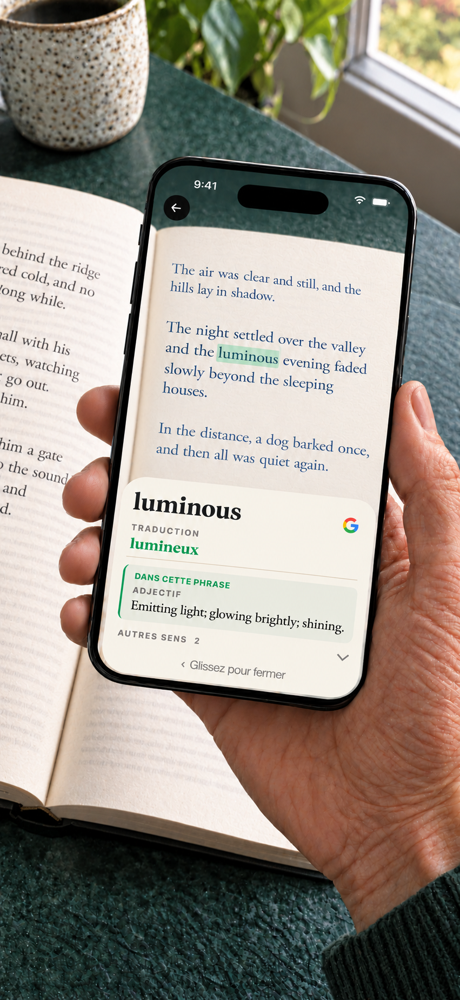

Comment chercher un mot dans un livre papier ?
Pour chercher un mot dans un livre papier, vous pouvez le saisir dans un dictionnaire, consulter un dictionnaire imprimé ou viser le mot avec un dictionnaire par appareil photo. La recherche par appareil photo évite la saisie ; une recherche manuelle reste utile lorsque la page se photographie mal.
Booktionary est un dictionnaire par appareil photo pour iPhone conçu pour chercher un mot à la fois. Visez le mot avec le cercle central, lisez sa définition, puis fermez le panneau pour retrouver votre phrase dans le livre papier.
Choisissez la langue du livre avant de commencer. Le dictionnaire anglais est intégré ; les 23 autres dictionnaires sont des téléchargements facultatifs inclus dans l’achat. Un dictionnaire définit les mots du livre. Un pack de traduction ajoute, lui, des équivalents pour les mots d’un livre en anglais.
La reconnaissance dépend du texte imprimé et de l’éclairage. Si le mauvais mot apparaît, rapprochez le téléphone, évitez les reflets et recentrez le cercle. La couverture varie : tous les noms propres, graphies et formes conjuguées ne sont pas disponibles. Une recherche manuelle peut alors compléter la recherche par appareil photo.
Essayez un mot de votre livre
- Choisissez la langue du livre. Téléchargez son dictionnaire si nécessaire.
- Touchez Commencer à lire et autorisez l’accès à l’appareil photo.
- Avec un bon éclairage, maintenez le cercle central sur le mot imprimé pendant environ une seconde.
- Lisez la définition. Faites glisser le panneau pour le fermer et retrouver l’appareil photo et votre livre.

Voir l’app, toutes les langues et les téléchargements nécessaires.